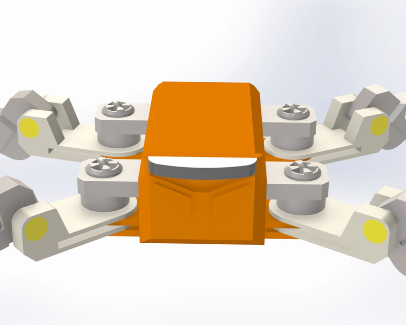
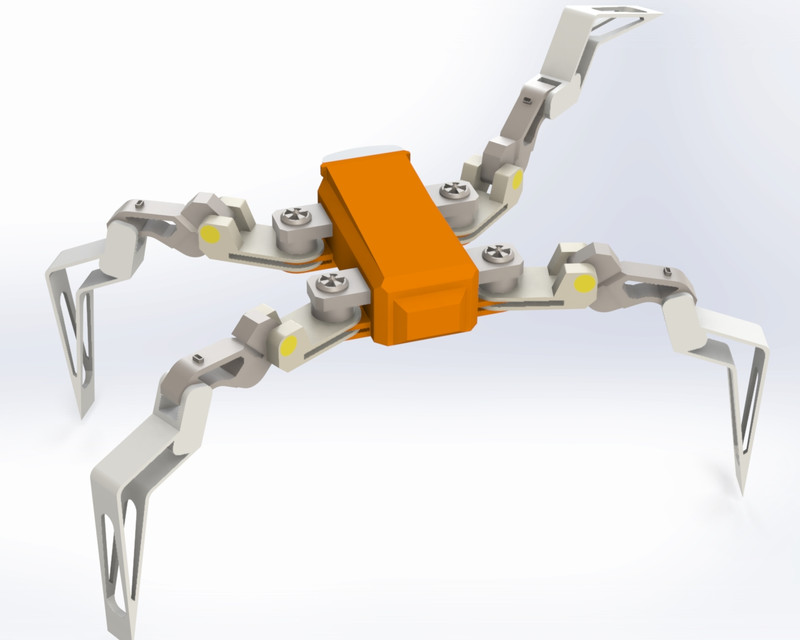
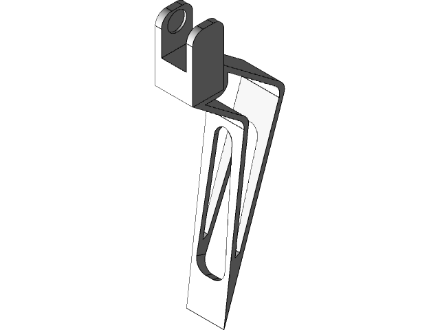
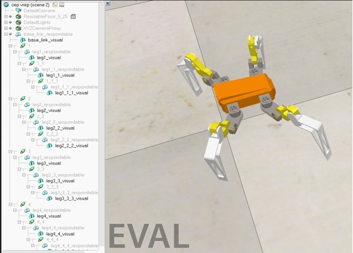
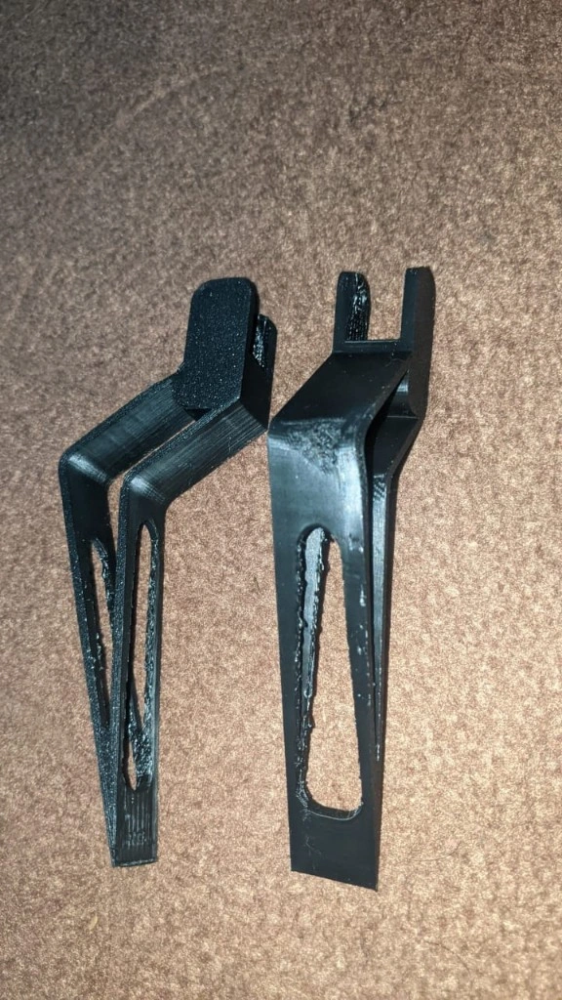

Four-Legged Crab Robot — SolidWorks CAD & CoppeliaSim/V-REP Simulation
This project is a biomimetic four-legged crab robot designed in SolidWorks and fully simulated in CoppeliaSim (V-REP). The robot emphasizes a stable sideways gait (crab-style translation) with compliant, lightweight legs. The workflow covered CAD, mass/inertia estimation, kinematic modeling, controller tuning, contact/terrain experiments, and 3D-printed leg prototypes.

1) Goals & Design Constraints
2) Mechanical Design (SolidWorks)


Key CAD Notes
- Mass properties: extracted from SolidWorks (per-link). Exported to CoppeliaSim to match dynamics.
- Joint limits: designed to avoid self-collision at extreme poses; yaw at shoulder adds natural lateral reach.
- Cable routing: internal grooves for actuator wires; foot slot for replaceable pads/claws.
- Manufacturability: all parts printable on a 220×220 mm bed; minimal supports on hip parts.
3) Kinematics & Actuation
Each leg uses a 3-link planar chain with an extra hip-yaw DOF for sideways reach. We implemented both analytical IK (for fast stepping) and numerical damped-least-squares (for obstacle tests). A simple PD controller regulates joint angles; gravity compensation and foot-contact detection improve stability during stance.
p_cmd → IK(q*) → PD: τ = Kp(q*−q) + Kd(−q̇)
4) Simulation (CoppeliaSim / V-REP)
The SolidWorks assembly was exported (STL/OBJ + URDF-like joint tree) and re-parameterized in CoppeliaSim:
- Mass/inertia per link from CAD; friction, restitution, and foot contact patches tuned for realistic stance.
- Controllers: Lua or remote Python script; 50–100 Hz loop with synchronous stepping.
- Scenes: flat plane, low-friction patch, 2–3 cm step, and ±5° ramp for stability tests.
- Foot contact: ray/force threshold triggers stance ↔ swing transitions.

5) Gait Planner (Lateral “Crab” Motion)
The robot moves primarily sideways. We implemented two patterns:
- Static lateral crawl: one leg swings while the other three keep the support polygon wide. CoM projection is kept inside polygon → very stable.
- Lateral trot: diagonal pair swing together for higher speed; requires tighter PD gains and short stance re-centering.
phase = { LF:0, RF:π, LB:π, RB:0 } // crawl
x_foot(t) = x0 + A * sawtooth(phase + ωt)
z_foot(t) = z_clear during swing
6) Prototyping

7) Results & Metrics (Simulation)
- Sideways speed: ~0.12–0.18 m/s (trot), ~0.06–0.09 m/s (crawl), depending on step length and stance timing.
- Stability margin: minimum CoM–support-polygon distance > 1.5 cm in crawl; near-zero at peak trot swing (acceptable with PD damping).
- Energy: lower knee torque when swing trajectory includes a slight lift-hold to clear terrain and reduce impact.
- Terrain: clears 20–25 mm obstacles with 35–40 mm foot clearance; traverses ±5° ramps in crawl mode.
8) Challenges & Fixes
- Self-collision at max stride → added hip-yaw limit and reduced knee hyper-extension.
- Foot slip on low-μ surfaces → increased normal force during stance and used vertical preload in PD.
- Printed leg flex → changed infill from 15% to 35% near hinge; added fillets at stress concentrators.
- Controller chatter → introduced velocity damping (Kd↑) and small deadband around set-point.